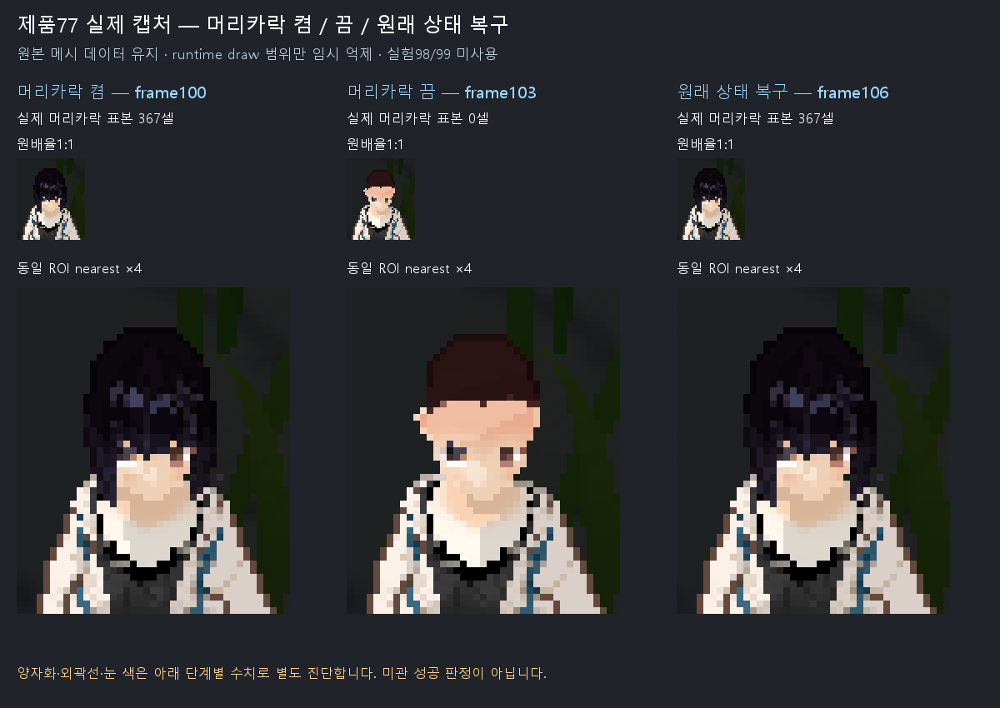
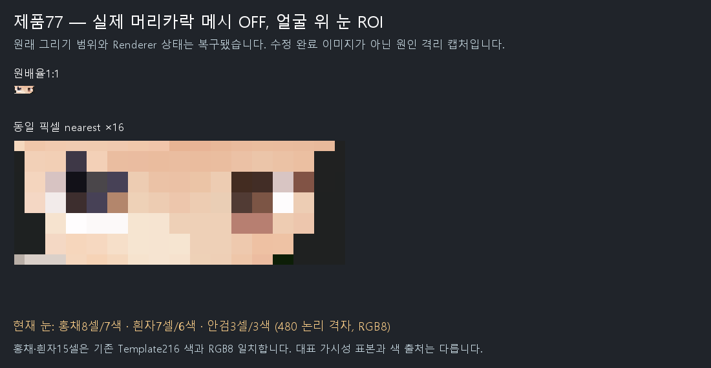
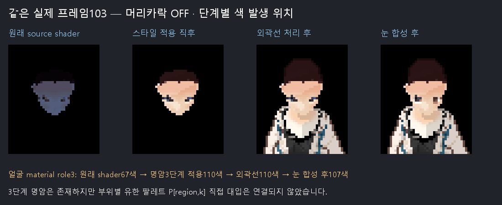

실제 정상 Play 1회에서 켬/끔/복구3상태를 캡처했습니다. 머리카락 source367→0→367셀. 원본 메시의 vertex/index 데이터를 지우지 않고 실행 중 그리기 범위만0으로 억제했습니다. 원래 draw descriptor·인덱스 해시·Renderer 활성 상태를 복구했습니다. 제품 알고리즘 수정이나98/99 활성화는 없습니다. 요약/보존/제한

눈 ROI 단독 비교 PNG · 원배율 · nearest16배

각 칸은 해당 단계의 유효 셀 수 / RGB8 고유 색 수입니다. native는 논리셀의2배 격자라 면적4배이며, 여러 재질을 합쳐 한 팔레트 색 수로 세지 않았습니다. face_skin은 source material role3이지 완성된 의미 특징ID가 아닙니다. 머리카락을 꺼도 남는 갈색 두피는 얼굴 원본 텍스처/구조를 별도 확인해야 하며 임의로 지우지 않았습니다.
| 부위/소스역할 | 원래 shader | 스타일 직후 | 외곽선 후 | 눈 합성 후 | native 최종 |
|---|---|---|---|---|---|
| face_skin | 254 / 67 | 254 / 110 | 254 / 110 | 248 / 107 | 992 / 107 |
| iris | 4 / 4 | 4 / 4 | 4 / 4 | 8 / 7 | 32 / 7 |
| sclera | 2 / 2 | 2 / 2 | 2 / 2 | 7 / 6 | 28 / 6 |
| native_lid | 5 / 5 | 5 / 5 | 5 / 5 | 3 / 3 | 12 / 3 |
| brow | 1 / 1 | 1 / 1 | 1 / 1 | 1 / 1 | 4 / 1 |
| source_role7 | 0 / 0 | 337 / 133 | 337 / 134 | 337 / 134 | 1348 / 134 |
| source_role10 | 0 / 0 | 298 / 103 | 298 / 97 | 298 / 97 | 1192 / 97 |

얼굴 Q값은0/.5/1로 양자화돼 있습니다. 하지만 원본 UV 색에 조명계수를 곱하는 SurfaceLayerOutput335 경로이므로 최종 피부 RGB는110색입니다. 따라서 ‘명암 양자화가 전혀 없다’와 ‘유한 최종색 팔레트가 적용됐다’는 둘 다 틀립니다. 유한 P[region,k]가 연결되지 않아 전 부위의 정식 팔레트 밖 색 수는 정의할 수 없습니다. 임의의3~4색을 정답으로 정해 숫자를 통과시키지 않았습니다.
머리카락 OFF에서 홍채8셀/7색·흰자7셀/6색입니다. 이15셀은 현재 Template216 원본 atlas의 RGB8과 모두 같습니다. Native S1/S2 가시성 표본의 색과 다르다는 것만으로 색 오염이라고 판정하면 잘못된 분석입니다. ComposedSource76이 기존295 합성 결과17셀을 그대로 보존하고, 새348 native 안검 선택은1셀입니다. 눈 colour 공급원이 실제 원본 material/UV 팔레트가 아니라 기존 atlas인 점을 별도 통합 문제로 남깁니다.
OwnerLines333은 현재 얼굴·눈·안검 픽셀을 바꾸지 않았습니다(이번 입력0셀). 몸/의상 role7/10은 각각23/60셀을 바꿨으며, 실제 linear RGB×.55와 일치하는 좌표 예를 SUMMARY100에 저장했습니다. 다른 분기는 deepSkin/deepCream 고정 슬롯도 사용하므로 모든 외곽선을 곱셈 하나로 설명하지 않습니다. 전체 colour list·좌표·소스 provenance
HeadLocal367.RenderFrame은 몸/머리의 별도480×272 격자를 렌더하고 head→main offset/depthOffset으로 합칩니다. FullFeature367.DispatchPost는 Prepare→RestoreStyle→JoinBare→OwnerLines→295 eye compose→DeferredEyes/348→Resolve 순서입니다. EyeRenderer367은7개 support를 같은 머리 격자의4×4 서브샘플로 만들고,348이 원본 눈 좌표/형태와 깊이·가림을 평가합니다. Native395가960×544로 최종 표시합니다. 단순 얼굴→눈→머리 고정 도장 순서도, 모든 특징이 각각 완전 독립 격자를 가진 구조도 아닙니다.
일치: 유한 팔레트 미연결,98 Query 가림 가중치→Select의 특징 선택 결합, 기존 눈이 있는 BaseFinal에서 vacated를 복원하는 역방향 구조. 동률3지선다를 사용자에게 선행 요구하는 단계는 중단합니다. 다음 설계는 눈 없는 source-backed 얼굴 바탕→외부 머리 가림과 독립된 전체 눈 정체성/형태→머리의 깊이/coverage 최종 가림→P[region,k] 직접 대입을 분리해야 합니다.
정정: 레이어·양자화가 전혀 없다는 표현은 실제 코드와 다릅니다. 존재하는 파츠/깊이와 명암Q가 목표의 깨끗한 정방향 레이어/유한색 출력을 만족하지 못합니다.98의 world 복사는 실제 ray의 빈틈을 정확히 보존했지만, 요구하는2D 얼굴 캔버스를 만드는 해결은 아닙니다. 원문이 제안하는 고정3~4색,1~2셀 무조건 다수결,모든 포즈 대칭,원본 없는 피부 강제 채움은 새 설계 조건으로 분리하며 자동 사용자 확정으로 올리지 않습니다. 피부·두피·눈꺼풀 등 같은 material 내부의 실제 색 특징까지 한 색군으로 합치면62의 실패를 반복합니다.
추가 검토 질문: 깨끗한 Layer0의 눈구멍 폐쇄 도메인/깊이를 기존 ph.backing과 parent contour에서 어떻게 정의할지, 외부 가림 이전 전체 eye canonical part 관계와 Close 변형을 어떻게 공동 배치할지, source UV region→P[region,k]를 초기/최종/외곽선 모두에 어떻게 일관되게 연결할지가 남았습니다. Argon에 직접 연락하지 않았습니다. 정확한 함수/반례/재현은 기존 PIXEL_ALBEDO 인계에 연결합니다.
실제 파일명은 Desktop/Argon2.1.md이며2.1.md는 없습니다. 원본 두 문서를 읽기만 했습니다. 추가 자료가 제시한 색상 direct-LUT, 구버전 눈 선합성 제거, 눈 내부 형성과 외부 머리 가림 분리는 코드상의 원인과 대응합니다. 다만 예제의 ResolvePaletteRegionId/IsTopContourCell/cleanup은 아직 구현이 없고, UV 구역을 실제 특징으로 구분하는 문제가 선행합니다. 같은 material의 두피·피부를 medoid 하나로 합치면62 실패가 재발합니다.
작은 반례: K가 외곽선 포함 총3색이면 수식은0..2를 생성하지만 예제 HLSL은 명암값0/.5/1을1/2/3으로 조회합니다. 총 슬롯 수와 명암 수 계약을 구분해야 합니다. 제안된 L코너 식은 (0,0),(1,0),(0,1)의 중심을 지워4연결1개를2개로 나누며90도 회전에 불변하지 않습니다. IsInterior가 별도 보호한다면 그 정의와 회귀가 필요합니다. 재현 가능한 슬롯/위상 반례.
안구를 skin palette로 그리는 것은 Layer0 폐합용 proxy 후보입니다. role3 강제만으로 sclera UV가 skin 영역으로 바뀌지 않으므로 explicit skin region/P가 필요합니다. 원래 안구 기하의 구멍·alpha·Close 상태에 따라 가림/깊이 검증도 필요하며, 법선 .35 혼합으로 모든 회전에서 구멍0을 보장하지 않습니다. iris≥white의 결정론적 선택은 -1을 없애지만 전체 눈의 형태/파트 관계/시간 대응까지 보장하지 않습니다. 이전 라벨 히스테리시스는 화면 p가 아니라 같은 source feature를 따라 운반해야 합니다. 각0.5/.35/정칙화 세기는 공급된 새 설계 가정이며 원문 자체를 실행 승인이나 검증 완료로 취급하지 않았습니다.
현재 고정 pose3상태이며 hair-off 회전/시간 안정성·새 Layer0/Layer1 완성은 검증하지 않았습니다. Template ROI의 top/bottom export 오류는 실제 RAW를 수정하지 않고 명시했습니다. 분석은 현재 prefab이 선언한 원본 atlas 자산을 읽어 보완했으며 새로운 frame으로 가장하지 않습니다. dirty31·직렬화47/47·입력 같은 객체22값·장치·씬/옵션/pipeline/time/global 보존, RT30→30, 신규 오류0. 제품77은 그대로입니다.